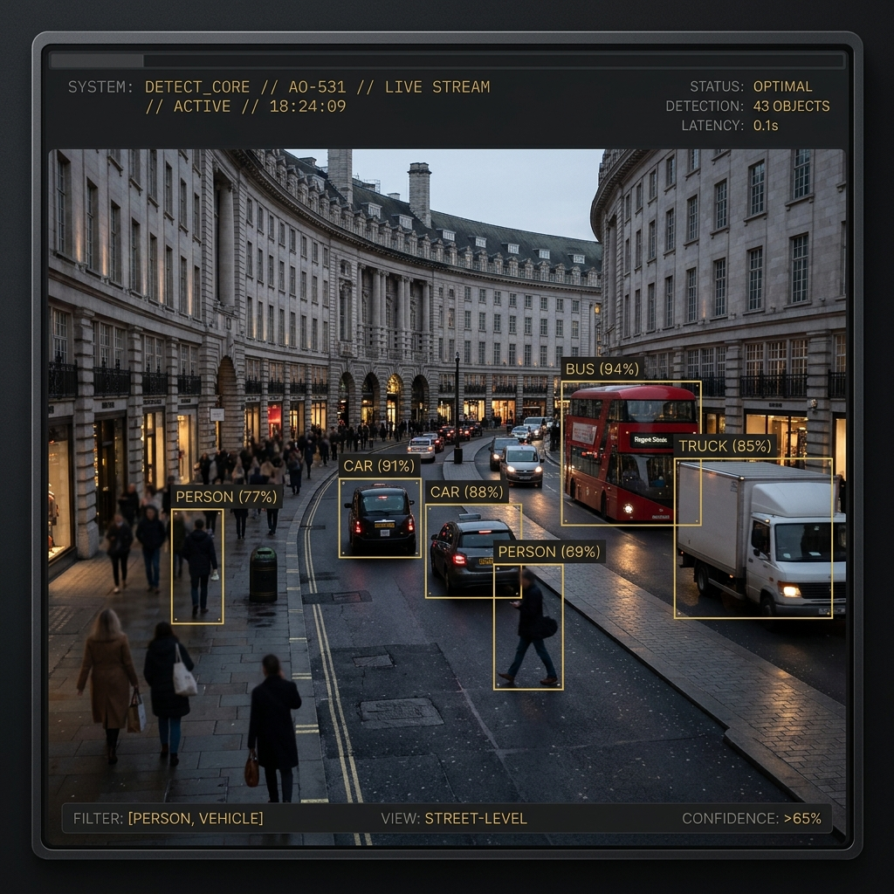

A high-performance computer vision system built for surveillance, automation, and intelligence.
FPS Inference Speed
Detection Model
mAP Score
COCO Categories
Benchmarked on standard hardware, COCO Dataset 2017
VisionTrack is a production-grade object detection pipeline built on YOLOv8 and PyTorch, capable of detecting and classifying multiple objects in real time from live video streams. Designed for scalable deployment in surveillance, robotics, and industrial automation.

Live webcam or video stream capture via OpenCV.
Frame resizing, normalization, and batch preparation.
YOLOv8 model via PyTorch, confidence scoring.
Bounding boxes, class labels, and FPS overlay on stream.
Achieves 25+ frames per second on standard CPU/GPU hardware, ensuring immediate response for critical applications.
Simultaneously detects and tracks over 80 distinct object categories trained on the comprehensive COCO dataset.
Calculates precise probability scores for every detection, allowing strict threshold filtering to eliminate false positives.